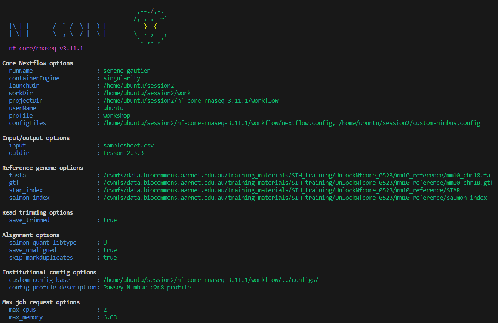

2.3. Configuring a run for your environment
- Learn how to check the default configurations that are applied to nf-core workflows
- Understand how to over-ride default configurations with custom configuration files
- Write a custom config file for your local environment and apply this configuration to your run
- Observe the hierarchy of parameter configuration in action
In the previous exercises, we have explored how to customise a run with workflow parameters on the command line or within a parameters file. In this lesson we will now look at configuration settings, which manage how the workflow is implemented on your system.
Nextflow’s portability is achieved by separating workflow implementation (input data, custom parameters, etc.) from the configuration settings (tool access, compute resources, etc.) required to execute it. This portability facilitates reproducibility: by applying the same parameters as a colleague, and adjusting configurations to suit your platform, you can achieve the same results on any machine with no requirement to edit the code.
2.3.1. Default nf-core configuration
Recall that when a pipeline script is launched, Nextflow looks for configuration files in multiple locations:
At level 5 of the above priority list is the file workflow/nextflow.config. This file also applies workflow/conf/base.config to the workflow execution with the following statement:
includeConfig 'conf/base.config'Together, these two configuration files define the default execution settings and parameters of an nf-core workflow.
Let’s take a look at these two configuration files to gain an understanding of how defaults are applied.
➤ Using the more command, scroll through workflow/conf/base.config:
more nf-core-rnaseq-3.11.1/workflow/conf/base.configThe generic base.config sets the default compute resource settings to be used by the processes in the nf-core workflow. It uses process labels to enable different sets of resources to be applied to groups of processes that require similar compute. These labels are specified within the main.nf file for a process.
We can over-ride these default compute resources using a custom configuration file.
➤ Then take a few moments to scroll through workflow/nextflow.config:
more nf-core-rnaseq-3.11.1/workflow/nextflow.configThe nextflow.config file is more workflow-specific, and sets the defaults for the workflow parameters, as well as defines profiles to change the default software access from $PATH to the specified access method, eg Singularity.
We can over-ride these parameters on the command line or with a parameters file, and over-ride the default behaviour of searching for tools on $PATH by specifying a -profile.
Default settings for --max_cpus, --max_memory and --max_time are applied within the nf-core workflow/nextflow.config. These are generous values expecting to be over-ridden with your custom settings, to ensure that no single process attempts to use more resources than you have available on your platform.
Within workflow/conf/base.config, the check_max() function over-rides the process resources if the custom ‘max’ setting is lower than the default setting for that process.
- What are the default settings for CPU, memory and walltime for the
STAR_ALIGNmodule? - How have these defaults been changed from our applied customisations in the previous runs?
To uncover these answers, we need to understand what process label has been assigned to the STAR_ALIGN module.
more workflow/modules/nf-core/star/align/main.nf
# or
grep label workflow/modules/nf-core/star/align/main.nf
# then
more nf-core-rnaseq-3.11.1/workflow/conf/base.configSTAR_ALIGN has the label process_high which has the settings 12 CPUs, 72 GB mem, 16 hrs walltime applied by the default base.config. We have previosuly applied --max_cpus 2 and --max_memory 6.GB, so the check_max() function would have reduced the resources given to the STAR alignment process to 2 CPUs and 6 GB RAM, while retaining the default max walltime.
2.3.2. When to use a custom config file
In our runs so far, we have avoided the need for a custom resource configuration file by:
- Over-riding the default tool access method of
$PATHby specifying thesingularityprofile defined inworkflow/nextflow.config- Without this, our runs for this workshop would fail because we do not have the workflow tools (eg STAR, salmon) installed locally on our VMs
- Over-riding the default values for CPUs and memory set in
nextflow.configwith--max_cpus 2and--max_memory 6.GBto fit on our small VMs- Without these parameters, our runs would fail at the first process that requests more than this, because Nextflow workflows check that the requested resources are available before attempting to execute a workflow
These are basic configurations. What if:
- We wanted to increase the resources used above what is requested with process labels to take advantage of high CPU or high memory infrastructures?
- We wanted to run on a HPC or cloud infrastructure?
- We wanted to execute specific modules on specific node types on a cluster?
- We wanted to use a non-default software container?
- We wanted to customise outputs beyond what was possible with the nf-core workflow parameters?
üí° This is all possible with custom configuration files!
The rest of lesson 2.3 will explore custom resource configuration files, while lesson2.4 will focus on customising outputs. We won’t be covering custom workflow execution on HPCs in this workshop, but please check out our tips and tricks page later if you are interested in this!
2.3.3. Institutional config files
We can set these and other configurations within a custom configuration file that is specific to our institution: this is referred to as an institutional config.
Institutional configs help us create efficient workflows that can be shared with others to reproducibly run the workflow in the same computational environment
Bioinformatics relies on large-scale computational infrastructures and has a significant carbon footprint due to the energy required to run computational workflows. We can optimise our workflows to not only reduce their runtime, but also adopt more sustainable computing practices. This paper makes for an interesting read about the carbon footprint of bioinformatics workflows and tools!
There is a repository of institutional configs for nf-core pipelines. These have been contributed to by the community.
We have created an nf-core config for Pawsey’s Nimbus cloud: this (and other institutional configs) was downloaded along with the workflow code.
➤ View the available list of institutional configs we pulled down along with the workflow code:
ls nf-core-rnaseq-3.11.1/configs/conf➤ Then take a look at the Pawsey Nimbus config:
more nf-core-rnaseq-3.11.1/configs/conf/pawsey_nimbus.config- What arguments would we apply to our command line to utilise the
pawsey_nimbus.configand set the right configurations for software and compute for our VMs?
üí° Hint: the Nimbus training VM ‚Äòinstance flavour‚Äô is ‚Äòc2r8‚Äô i.e. 2 CPU and 8 GB RAM. See the Pawsey Nimbus nf-core config documentation for help.
-profile pawsey_nimbus,singularity,c2r8To select the institutional config, we apply -profile <config_basename>. To select the desired profiles from within that config, we further add the singularity and c2r8 profiles in a comma-delimited list.
In the event where your institution does not have a publicly available configuration file and/or you want to apply your own customisations, you will need to write your own config file.
üí° You can contribute to the nf-core community by sharing your config!
For the sake of the exercise, let’s assume there wasn’t a Pawsey Nimbus config publicly available, and write our own that is specific to our ‘c2r8’ VMs.
➤ Open a new file called custom-nimbus.config and start writing some Nextflow code by adding:
// Nimbus nf-core workshop configuration file
profiles {
workshop {}
}Using the profiles scope in a configuration file groups attributes that belong to the same profile, in our case a profile we have chosen to name workshop.
➤ Inside this workflow profile, let’s remove the need for the -profile singularity flag from our run command by adding another scope called singularity:
Nextflow has a number of options for using Singularity that allow you to control how containers are executed. We are using:
enabledto use Singularity to manage containers automaticallyautoMountsto allow Nextflow to automatically mount host paths when a container is executedcacheDirto specify the directory Singularity images can be pulled from
// Nimbus nf-core workshop configuration file
profiles {
workshop {
singularity {
enabled = true
autoMounts = true
cacheDir = '/home/training/singularity_cache'
}
}
}➤ Now let’s address those two resource parameters --max_memory 6.GB and --max_cpus 2. At the same level as the singularity scope, add a params scope and specify each parameter underneath:
When customising nf-core workflows, do not add parmeters to custom config files! The case of max resource settings is a rare exception to this rule.

// Nimbus nf-core workshop configuration file
profiles {
workshop {
singularity {
enabled = true
autoMounts = true
cacheDir = '/home/training/singularity_cache'
}
params {
max_cpus = 2
max_memory = 6.GB
}
}
}➤ Add finally, add a profile description using the config_profile_description parameter and set the cache behaviour to lenient:
Workflow execution is sometimes not resumed as expected. The default behaviour of Nextflow cache keys is to index the input files meta-data information. Reducing the cache stringency to ‘lenient’ means the files cache keys are based only on filesize and path, and can help to avoid unexpectedly re-running certain processes when -resume is in use.
// Nimbus nf-core workshop configuration file
process {
cache = 'lenient'
}
profiles {
workshop {
singularity {
enabled = true
autoMounts = true
cacheDir = '/home/training/singularity_cache'
}
params {
config_profile_description = 'Pawsey Nimbus c2r8 profile'
max_cpus = 2
max_memory = 6.GB
}
}
}➤ Save the config then re-run the pipeline, requesting the workshop profile be applied from our custom-nimbus.config and set the --outdir parameter to Lesson-2.3.3
nextflow run nf-core-rnaseq-3.11.1/workflow/main.nf \
-profile workshop \
-c custom-nimbus.config \
-params-file workshop-params.yaml \
--outdir Lesson-2.3.3 \
-resumeBecause our profile is described within a local config, we need to specify both the name of the profile we want to apply to the run and the config that describes it. If our config was part of the nf-core config repository, we would not need to specify the config at -c. The basename of the config would be supplied at -profile and any profiles within that config that we wanted to apply to the run would be specified in a comma-delimted list.
For example to run the above command using the Pawsey Nimbus config from the nf-core config repo:
nextflow run nf-core-rnaseq-3.11.1/workflow/main.nf \
-profile pawsey_nimbus,singularity,c2r8
-params-file workshop-params.yaml \
--outdir Lesson-2.3.3 \
-resumeüëÄ We can see that our custom configurations have been read:
- Our Nimbus config is listed under Core Nextflow options
- Our profile description shows under Institutional config options
- Our
max_cpusandmax_memoryshow under Max job request options

⌛ Applying the new profile means the processes will execute from scratch rather than from cached files!
While we wait, let‚Äôs talk about the üêò in the room‚Ķ
This warning appears because we have included a custom config, ie we now have ‘multiple configs’ because the default nextflow.config counts as well!
Recall lesson 1.3.7 where you attemped to set the parameter multiqc_title to your favourite colour within my_custom_config.config. The multiqc_title parameter displayed in the STDOUT under ‘Input/output options’ but was NOT applied to the run! The alarming-looking warning provided by nf-core is a gentle but firm reminder of this very important detail.
Reminder of what that looks like in action: if the multiqc_title parameter was included as a param in custom-nimbus.config, the param and value would appear in the run log but would not actually be applied to the run.
params {
multiqc_title = 'black'
}$ ls Lesson-2.3.3-MQC/multiqc/star_salmon/
multiqc_data multiqc_plots multiqc_report.htmlWe will check on the results of this run a little later.
Leave the run command running in your terminal, and open a new terminal (if you are in VS Code, do this by clicking the + icon in the top right corner of your terminal).
This new terminal will be for basic commands only, not submitting another workflow run, as we do not have sufficient CPU and memory on the VM to run two workflows concurrently.
2.3.4. Custom resource configuration using process labels
Capping workflow resources using the max parameters is a bit of a blunt instrument.
To achieve optimum computational efficiency on your platform, more granular control may be required.
If you appled --max_cpus 16 to the nf-core rnaseq workflow, the STAR_ALIGN module would still only utilise 12 CPUs, as this module (as we learnt in 2.3.1) has the label process_high which sets CPUs to 12.
If there were no processes with fulfilled input channels that could make use of the 4 remaining CPUs, those resources would sit idle until the STAR_ALIGN process had completed.
Optimisation for this platform might for example set max_cpus to 8 so two samples could be aligned concurrently, or over-ride the CPU resources assigned to the STAR_ALIGN module to 16.
The next two lessons will demonstrate how to achieve this using custom configuration files that fine-tune resources using process labels to assign the same resources to groups of processes sharing the same label, or withName to target specific processes.
➤ Edit custom-nimbus.config to set cpus to 2 and memory to 6 GB within the process scope:
Set 2 CPUs and 6 GB memory for the process labels process_low, process_medium and process_high within the process scope
üí° Hint: View the file nf-core-rnaseq-3.11.1/workflow/conf/base.config for syntax example
- Delete the
max_cpusandmax_memoryparameters from theparamsscope - Add a
processscope inside theworkshopprofile - Use
withLabel: <label_name>to set resources for each label
// Nimbus nf-core workshop configuration profile
process {
cache = 'lenient'
}
profiles {
workshop {
singularity {
enabled = true
autoMounts = true
cacheDir = '/home/training/singularity_cache'
}
params {
config_profile_description = 'Pawsey Nimbuc c2r8 profile'
}
process {
withLabel: process_low {
cpus = 2
memory = 6.GB
}
withLabel: process_medium {
cpus = 2
memory = 6.GB
}
withLabel: process_high {
cpus = 2
memory = 6.GB
}
}
}
}➤ Save the file then re-run the workflow with our custom configuration, setting outdir parameter to Lesson-2.3.4:
If you haven’t done so already, check that the run from lession 2.3.3 has completed successfully.
You run should have a summary message similar to below:
-[nf-core/rnaseq] Pipeline completed successfully with skipped sampl(es)-
-[nf-core/rnaseq] Please check MultiQC report: 2/2 samples failed strandedness check.-
Completed at: 11-May-2023 13:21:50
Duration : 7m 8s
CPU hours : 0.2
Succeeded : 66with the following output directories:
$ ls Lesson-2.3.3
fastqc multiqc pipeline_info star_salmon trimgalorenextflow run nf-core-rnaseq-3.11.1/workflow/main.nf \
-profile workshop \
-c custom-nimbus.config \
-params-file workshop-params.yaml \
--outdir Lesson-2.3.4 \
-resume üëÄ Notice that the Max job request options are no longer listed on the run log printed to screen, because we are setting them within the process scope rather than params scope.
Recall the order of priority in which parameters and configurations are applied by Nextflow.
The settings we specify with -c custom-nimbus.config will over-ride those that appear in the default nf-core configurations workflow/nextflow.config and workflow/conf/base.config.
Settings that are not over-ridden by -c <config> or any parameter from params file or provided on the command line will still be set to the nf-core defaults specified in nextflow.config, base.config or main.nf.
To avoid confusion, it is best not to name your custom configuration files nextflow.config!
2.3.5. Custom resource configuration using process names
This exercise will demonstrate how to adjust the resource configurations for a specific process using the withName process selector, using the STAR_ALIGN module as example.
withName is a powerful tool:
- Specifically target individual modules
- Multiple module names can be supplied using wildcards or ‘or’ (
*or|) notation - No need to edit the module
main.nffile to add a process label - Has a higher priority than
withLabel
To utilise withName, we first need to ensure we have the correct and specific executuion path for the module/modules that we wish to target.
➤ Identify the execution path for the STAR_ALIGN module:
Recall from lesson 1.3.5 the following tips:
- The extended execution path is built from the pipeline, workflow, subworkflow, and module names
- It can be tricky to evaluate the path used to execute a module. If you are unsure of how to build the path you can copy it from the
workflow/conf/modules.configfile
You can view the modules.conf file on Github or search your local copy:
grep STAR nf-core-rnaseq-3.11.1/workflow/conf/modules.configwithName: 'UNTAR_.*|STAR_GENOMEGENERATE|STAR_GENOMEGENERATE_IGENOMES|HISAT2_BUILD' {
// STAR Salmon alignment options
withName: '.*:ALIGN_STAR:STAR_ALIGN|.*:ALIGN_STAR:STAR_ALIGN_IGENOMES' {
withName: '.*:QUANTIFY_STAR_SALMON:SALMON_QUANT' {
withName: '.*:QUANTIFY_STAR_SALMON:SALMON_TX2GENE' {
withName: '.*:QUANTIFY_STAR_SALMON:SALMON_TXIMPORT' {
withName: '.*:QUANTIFY_STAR_SALMON:SALMON_SE_.*' {
withName: 'DESEQ2_QC_STAR_SALMON' {
// STAR RSEM alignment options- Note that this does not provide the PIPELINE or WORKFLOW name at the front of the path. You can add these manually (eg
PIPELINEis NFCORE_RNASEQ andWORKFLOWis RNASEQ) but the path withinmodules.configis usually all that is required for specificity within a workflow - If you have previously run the pipeline, you could also extract it from your run log printed to screen, execution trace etc
For STAR_ALIGN within the nf-core/rnaseq workflow, any of the following would be correct and specific:
'NFCORE_RNASEQ:RNASEQ:ALIGN_STAR:STAR_ALIGN'
'.*:RNASEQ:ALIGN_STAR:STAR_ALIGN'
'.*:ALIGN_STAR:STAR_ALIGN'➤ Continue editing custom-nimbus.config. Inside the process scope, provide the execution path for the STAR_ALIGN module to the withName selector:
process {
withName: '.*:RNASEQ:ALIGN_STAR:STAR_ALIGN' {
}
} ➤ Then set CPU to 24 and memory to 96 GB:
process {
withName: '.*:RNASEQ:ALIGN_STAR:STAR_ALIGN' {
cpus = 24
memory = 96.GB
}
} // Nimbus nf-core workshop configuration profile
process {
cache = 'lenient'
}
profiles {
workshop {
singularity {
enabled = true
autoMounts = true
cacheDir = '/home/training/singularity_cache'
}
params {
config_profile_description = 'Pawsey Nimbuc c2r8 profile'
}
process {
withLabel: process_low {
cpus = 2
memory = 6.GB
}
withLabel: process_medium {
cpus = 2
memory = 6.GB
}
withLabel: process_high {
cpus = 2
memory = 6.GB
}
withName: '.*:RNASEQ:ALIGN_STAR:STAR_ALIGN' {
cpus = 24
memory = 96.GB
}
}
}
}➤ Save the config then resume your run, setting outdir to Lesson-2.3.5, once again applying your workshop profile from custom-nimbus.config:
nextflow run nf-core-rnaseq-3.11.1/workflow/main.nf \
-profile workshop \
-c custom-nimbus.config \
-params-file workshop-params.yaml \
--outdir Lesson-2.3.5 \
-resume If your execution path for the STAR_ALIGN module was specified correctly, your run should have died with the error shown below because Nextflow checks that the resources requested are available before executing a workflow:
What do you expect would happen to your run if your execution path for the STAR_ALIGN module was not specified correctly?
In this case, our pipeline would complete OK, because the resources for the STAR_ALIGN process have been appropriately set for our VM using the process_high label within our custom-nimbus.config.
The directives set within the withName scope would not be applicable, and a warning would be printed, eg
WARN: There's no process matching config selector: .*:RNASEQ:ALIGN_STAR:STARALIGN- nf-core workflows work ‘out of the box’ but there are compute and software configurations we should customise for our runs to work well on our compute infrastructure
- nf-core executes by default with
workflow/nextflow.configandworkflow/conf/base.configand has a repository of community-contributed institutional configs that ship with the workflow - we can write (and contribute) our own institutional config for reproducible runs on our compute platform
- custom configs can be applied to a run with
-c <config_name>, and will over-ride settings in the default configs - customisations can be targeted to specific processes using
withLabelorwithName - workflow parameters belong in
-params-file <params_file>and not-c <custom_config>